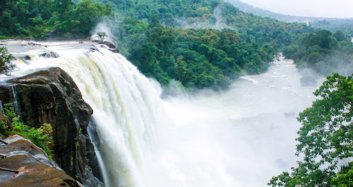

Thrissur
(Est. - 1 Jul 1949)
Eranakulam and Idukki to the South, Palakkad to its East and Malappuram to its North, the district of Thrissur has Thrissur city as its headquarters. To the West is the Arabian Ocean and the district is known for its rich culture and traditions. The famous Pooram festival is celebrated in this city.
These are two unique destinations to visit in Thrissur.

Athirapally WaterFalls